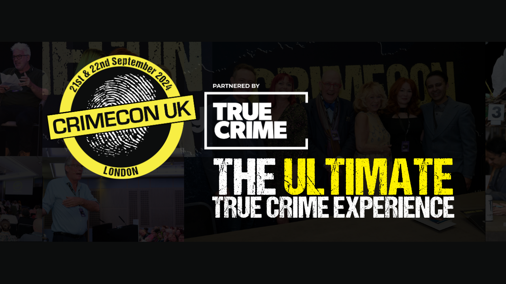

CrimeCon London 2024
Introduction
Crimecon London 2024 on 21st and 22nd of September was a really interesting couple of days with many people stopping by the Scottish Murders Podcast stand including many who knew about the podcast already, some who had discovered in from previous CrimeCon events and those who were finding out about the podcast for the first time. There was also an opportunity from Steve Keogh who was promoting his new venture, The Detective Experience which ushers in a new era of detective gaming powered by AI where he and other ex-detectives have given their help and advice to make sure it is as accurate as possible. It was great to be able to assist this by handing out details on how people can try out this gaming experience and try and have a go at becoming a detective themselves which may be their first step along the way to becoming a detective for real. We also talked to many of those who would be interested in starting their own podcast or getting help with their existing ones with the support we offer through Cluarantonn.
At CrimeCon London there were also sessions available for those there to attend to learn about various aspects of true crime and although it was a busy event with many people speaking to us on our stand we did attend a selection of sessions along with many opportunities to catch up with people there and found the whole weekend was inspiring and informative and a great representation of the true crime community, all of whom want to either highlight or be informed about the world of true crime including meeting many of the CrimeContributors such as Scottish Murders and find out more about true crime. Although we only attended a few of the sessions during the two days of CrimeCon in London they were really interesting to listen to and share them here.
Lessons from the Trump Assassination Attempt: Public Safety in the Wake of High-Profile Threats - Katherine Schweit & Sarah Ferris
Katherine discussed what happened on July 13th in Butler, Pennsylvania. When Katherine heard about it, she thought about all the law enforcement agencies involved. The person had shot at Donald Trump and got eight rounds off and was very young, he had climbed up onto a roof of a building and after the shots were fired was shot by a secret service sniper.
In law enforcement in the United States, they don't offer the name of the shooter but talk about the crime itself to avoid notoriety but also don't talk about victims which include Corey who was a volunteer firefighter who heard sound of gunshots and was behind the former president and threw himself over his daughter and he was killed instead of her. There were two other victims including David Dutch who had so much internal injuries due to high powered rifle hitting him and there was James Copenhaver who was a grandfather and was hospitalised so one person was killed and two were injured.
The area of Butler, Pennsylvania wasn't a massive town, it was in the Midwest of the United States and the former president, and his security detail went off a plane to the fairgrounds which is not a heavily populated area, and the shooter came from forty miles away. There were bleachers for people to sit behind and people stand in front of him with hundreds of people there. The edge of the fairgrounds had some buildings that were 150 feet away from the platform. The secret service had snipers facing the ground up on their own platforms with their own sight finders and could hit anything within a few hundred yards and facing the audience which is where the shooter was too.
There were people who noticed what is happening and signalled to people there what was happening, there were police there and secret service who surround him and look around him. Local law enforcement is clearing people into the space and within an hour before the former president went to speak someone saw this guy lurking around and was reported and was mentioned to having a range finder, when shooting at a distance bullets go down with a range finder can figure out to shoot. Local law enforcement is hearing beforehand that someone is lurking around with a backpack and people in the audience saying he is on a building over there and had climbed up the HVAC system and people could see him and this was before the shots rang out as the former president is going on to the podium and you could hear people saying he was up there and local law enforcement was talking about someone being up on the roof it was around 20 to 10 minutes beforehand. Local law enforcement is so sure and convey amongst themselves that a local law enforcement officer climbs up and the former president is speaking and starts to talk and gives his spiel and people are still saying he is on the building and there's five minutes where the law enforcement officer is up on the roof and 150 yards away from the former president the officer is there and tries to get to the guy and the person sees this and he turns and shoots eight shots quickly towards the former president and when he gets to the eighth shot the secret service agent shots him dead.
The reaction of the crowd was quite interesting and noticed the slow comprehension of the crowd but could see the cogs whirring but when the shots fired no one moved they just ducked down and stood around and watched secret service take the former president down from the podium. There is a big ballistic metal plate behind the podium if he kept down would be shielded. Afterwards there was a lot of blame of people in the secret service but right after the shooting the agency that owns the secret service said it was a failure, any time your protectee is shot that is a failure so there had been a report about what changes to make and changes that have already happened. Once piece of information that is astonishing is no one in the detail in the secret service knew they were looking for a shooter, they did not get that information even though they wear earpieces because there is no connection between that and the local law enforcement radios, as a base line you should be talking to each other. The law enforcement officers said they never met with the secret service and didn't know what their plans were. If you heard that an unidentified person is on a roof. The secret service should have put him down before knowing what was going on for sure, behind that ballistic plate but it easy to say this in hindsight. No body told the secret service but isn't a blame on local law enforcement and for an inauguration there needs work between each other.
The pathway for violence is they don't name the shooter but talk about the lead up so as a community there can be signs you can spot and if you see something you say it. The shooter is a white male and 20ish and lives 40 miles away and drove over in the morning to see the site and drove back home then drove back later and for 11 minutes he flies a drone over the whole location which clearly isn't secured. During Obama inauguration people had to sleep in offices the night before because the whole area gets shut down and secured but doesn't happen with campaigns and the area was only identified ten days before and this plan to do the shooting and he legally owned the rifle and bought fifty rounds om ammunition on the day of the shooting, but this is not suspicious as can buy ammunition anywhere in the United States. He bought the ammo between his two visits to the site, and he is seen lurking about outside with backpacks and inside was a rifle with a collapsible stack with a scope, so law enforcement didn't see it coming, so what could have been seen.
Who is around him? He is a kid graduated high school and scheduled to start college and become an electrical engineer and grew up hunting but on July 3rd the campaign is announced and July 7th he spends 20 minutes there and on July 12th he practices on the shooting range but was searching online about any politician from any party. The FBI handles this investigation but local law enforcement covers some crimes but don't cover this and the FBI discovers that he searched every political party and all kinds of subjects that covered all kinds of people by name and was looking for a target as he wanted to be famous and knew that there were snipers there but wanted to be famous by shooting at someone famous - he just wanted to get a target and this was the closest he could get, it was just a target of opportunity. Harris and Biden were searched for along with Trump, it would be assumed to have been politically motivated but was instead to be famous. The shooter registered as a republican but was not active in politics but also donated $15 to a democrat cause.
Will anything happen with Elon Musk saying no one is bothering with Harris or Biden? There are no consequences to this. There was a shooting where the father is being charged with a crime. In subsequent situations where there was another incident where the former president was on a golf course golfing and a couple of hours before someone saw him, shot at him and chased after him but what do you charge him with as he wasn't near the former president but is being charged with owning a gun with a felony but what can you charge him with. Culture of not naming the shooter is even more important as the motive of being famous wouldn't work. Was there an opportunity for the law enforcement officer to do anything and he went up on the roof and had a gun pointed at him and have to have your gun go over an edge before your face, if he had is gun up and went over the edge and gone over the edge and the shooter was looking at shooting the former president so maybe that could have prevented it and the law enforcement officer has to live with this. Trump is difficult to work with as he has regular routines and his main thing is golf and is on gold course all the time, but there isn't anyone at a government level who hasn't had a death threat against them. The second incident shooter was there twelve hours before then and was caught with a GoPro. When the pope was shot they put him in what is known as the popemobile and when President Kennedy was shot this ended use of open topped vehicle. Trump didn't have the same security as the president as no one is, it takes forty people to follow someone seven days per week. When the shots rang out the former president looked as most people would, when Reagan was shot the secret service jumped on top of him and when Trump was allowed to get up before they knew what was going on, they could have kept him down there and when they hustled him up and they are trying to block his head and was asking for his shoes as people do stupid things when they are shot at. They shouldn't have let him up and the photos of him with his fist up is a ridiculous unnecessary failure.
Women in Crime: Voices from the Frontline - Cherry Smith talks to Katherine Schweit, Vanessa Frake, Jackie Malton & Jeanette Ashmole
Jackie Malton was a DCI in the Met Police and inspired Prime Suspect and when she retired helped drama companies and then by chance Monster Films asked if she wanted to get involved with true crime. Jeannete Ashmole is a practicing barrister and advises on true crime. Vanessa Frake is a former governor and now advices on true crime. Katherine Schweit is a former FBI agent and writes books and talks about true crime on her Stop the Killing podcast.
Jackie as a former detective talked about challenges they faced when joined police 1970s, there was huge misogyny and there was initiation for a detective where they would stamp on your backside. She was openly gay in the police which was unknown at the time and would be give sex toys, enough to open a sex shop. She worked with the flying squad, and they made their life hell and there was a corruption case where she was a whistleblower about the overt homophobic and misogynistic behaviour.
Katherine was a prosecutor and came in as an older person so culturally things were different but had been harassed as a prosecutor but in the FBI, there was no tolerance for this there. When they joined it was 15% female and when they left it was the same, there were people who weren't keen to work with women but there was zero sexual harassment.
Vanessa found right the way through the rank structure from their early days to governor was they had to work harder. Being a gay woman back then was a no-no so had to be in the closet back then but said that people assume they are gay by looking at them but that her wife is straight by looking at them.
Jeanette said things have got better and bumped into an ex-officer who they couldn't have a conversation without sex coming up. In the criminal bar it was difficult to get into but 40% are female as there are initiatives so are many at a junior level and at a higher level it is male dominated who are privately educated men who have certain old-school perceptions of women.
Cherry asked about being a women in the justice system you have to act a certain way, they are all women who they would want to look up to who are making changes in the world for all women and making waves in the justice system with Jackie said they lot themselves along the way and their authentic self is assertive and culture of police made them doubt themselves and that was hardest thing to deal with and Jackie loved being in the police where the backroom at the police was worse than the people she was dealing with. When she helped Lynda la Plante with Prime Suspect, she felt she was betraying the Metropolitan Police but still had to be her authentic self but did wonder what people would think about it, but she has learned how to validate herself inside but shouldn't have tried to validate herself externally and added do not underestimate the power of the institution.
Katherine was bottom of family of ten kids and was assertive and when she joined the FBI she struggled to know how to deal with that and shortly afterwards took on 9/11 investigation and she found people who wouldn't take directions from her and had to be more assertive with them and tell them they did and told them to talk to her boss who told her they had spoken to them and the boss told them is what was asked for immoral, illegal or unethical then no and to do their job. You look for people who can mentor you and some were men, and some were charged with having an affair with them, but they hadn't as people who were jealous or angry with them. They didn't feel like going out with anyone as felt it was too risky.
Why did Vanessa want to pursue a career as a prison officer? They eventually wanted to be in a national service to make a difference and wanted to try and happened to see an advert to be in the prison service and thought they could do that and didn't really think about it. When they got to Wormwood Scrubs from Hollway they were the only female on the wing with 32 male officers and thought they had heard all the bad language until they met them and had to earn respect because they were a women and a gay women and would talk to them and would have their back as their senior officer but it took time and took odd one or two who were difficult. She prefers to work with men as they are much easier to work with due to emotional and social issues. If men don't like you, they are going to tell you.
Jeannette said as females you have to look after each other, some women hate other women so sometimes the issues in progressing can come from other women. Should be building each other up but there are some women at work have issue with for no reason.
Jackie volunteered in a men's prison and in a woman's prison and men are easier to deal with than women. Vanessa mentioned men are more respectful and had prisoners step in front of them to protect them which never happened in a female jail and wish she worked with men longer.
Katherine hasn't planned on being in law enforcement but when they went because they didn't see their future on the bench but had a cousin who encouraged them to the FBI as there is no better job and when things go wrong there are no budget limits. When they joined, they were a single mother with two kids and they were older than the average FBI classmates and had women in the class who relied on them to encourage help with problems and they gave them confidence by asking for help.
Jackie feels about being the inspiration that would have seen her as an inspiration is to be privileged for people to feel that but did have a dark journey. They did as much as they could to be accepted and had a feeling of not being good inside and not enough and they used alcohol to change the way about how they thought and lost themselves in the process, but they did get help with this and from this they have learned to validate themselves and it took twenty years to validate themselves and had imposter syndrome.
Show women don't need a man to validate their life and it is worthwhile thing to be inspiring and be the sort of woman is just them.
Jackie was assertive but inside but felt like tissue paper and Jeannette found it difficult with the criminal bar and didn't have any aspirations about doing it but managed to get into it and their achievements and determination is how the made it, there are still those judges even one who was female who shouted at them and felt getting to the point about questioning how they are being spoken too but does get imposter syndrome quite a lot. You put your wig and gown on and flaunt around the court looking like you know what you are doing. They cross examine people for a living.
Would they recommend their jobs to someone starting now? Jackie would, Jeanette would recommend being a commercial law barrister, Vanessa would say their heart goes out to the staff but if can get past that where it can't get worse and will get to the fabulous service it is to protect the public foremost but need to go in with your eyes wide open. Katherine would recommend it, the FBI is known to talk to people who come to the door who couldn't go to the local police and became a place where people go who have nowhere else to go.
Jackie mentioned that she feels Intuition as Inner Tuition, Katherine mentioned women are raised to be better listeners and observers. Sometimes men don't hear or listen enough or observe. If you have the culture in your environment, it is society, but things are getting better.
For the Love of Julie - Ann Ming MBE
Ann Ming's personal journey is inspiring and profound and changed the law and secured justice for many others. Ann had three children including Julie who had a child Kevin and was due to going through a separation and worked in a Pizza place and Ann saw her Julie about being there for 10 am in the morning for the separation but this would be the last time she saw her. In the morning she called her but got no answer so drove down to house and shouted in through letter box and phoned again from a phone box and something felt wasn't right. They got into the house by breaking in the back door but found it tidy and Julie was quite untidy, but they went to the police but was told it was too soon to report her missing. They went to the Pizza place where someone had taken her home and saw her go into the house, so they got back to the police and were again told it was too soon to report Julie missing.
Ann spoke to a police officer who said she had gone to start a new life in London and told them they were dealing with a stranger and she knew her daughter so she went to the main police station who said they would send a team of forensics who were there for five days and then got Ann to go to the house to see if anything was missing but the police didn't turn up but phoned them and were told "there aren't any dead bodies if that's what you mean" the police person said sorry. In the bathroom there was a makeup bag and knew she wouldn't get anywhere without and later a police man guaranteed them that nothing had happened in the house but Julie's keys were missing, there was an alarm fitted as lock was change but someone managed to break in without setting off the alarm and steal a video but there wasn't a sign of forced entry. They asked if they had searched the loft thoroughly, but the police kept in touch daily and no news is good news, and she has most likely taken off but had a child who was crying for his mammy.
It was coming up to December and the inspector told them to stay by phone as she may call but there were no calls but by a week or so later Ann's husband wondered if Julie had run off. They got the keys back in January and went into the house that had been shut off in November but they switched the central heating on but there was a smell in the bathroom but put some bleach down but came back the next time to see if they had got rid of the smell and it was just getting worse. As Ann went up the stairs, she thought don't let it be Julie, she leaned over the path to smell the wall the bath panel was loose, and the smell got worse and she was under the bath and had been there for three months and couldn't say how bad it was. She screamed she's under the bath, she's under the bath.
When the police came and put the tape up that was the start of the nightmare, they were told about the alarm that had seemingly malfunctioned and took a dog into the house and it became agitated but it didn't bark but they had taken it into the bathroom, but they then went outside instead when the break in had happened as that is was they were looking for.
William Dunlop was known to Julie and had come to arrest him as police had gone around for a missing from home enquiry and had said he had been involved in an incident in a club where he cut his eyebrow and got involved in a fight and had said that when he got back from hospital and got home at 2am but the house where he was lodging said he hadn't come back until later and under the floor was a set of keys with his finger prints but there were fibres and were told they had 110% evidence, but should never say this let alone 100%. It went to court and they were even asked which hand they opened the bath panel, it was a three week trial they deliberated for three days and judge they didn't understand the questions of the jury and they didn't have a jury foreman and they hadn't made their mind up so were dismissed and had to go through a trial.
The judge was the Ripper Judge from the Yorkshire Ripper Case and the jury were only given five hours to deliberate as he had to go back to London for a meeting, they called the jury back in and they had no verdict so the judge acquitted him! Ann couldn't believe it that he had been called a free man and weeks later was boasting how he got away with the perfect murder. There was nothing the police could do about it due to the Double Jeopardy law but had a real problem as he may kill again. He got with his old girlfriend who was at risk and was moved to a safe house and he got something to pretend to be his girlfriend to find out where she was and sent a video to say he was going to kill her and had a knife and even went into a police station to ask where she was.
William Dunlop laid low for a year and then got with someone else and got them pregnant, saw her with another man who was brother and friends and hit the man with a baseball bat so many times and stabber her with a BBQ skewer and only failed because more friends turned up. He plead guilty to GBH even though the two people nearly died for seven years and he wrote a letter and said that he would to do her what he did with Julie and admitted to it but he couldn't be charged with murder but with perjury instead but it would keep him off the streets but the maximum penalty was seven years with fourteen for the two counts when tariff for murder is 12 years but the judge only gave six years in total. There has not been someone who has confessed to a murder in a court of law before as he felt sorry for Julie's son, he felt if he got his confession in he would only face those charges.
Ann left and thought the double jeopardy law needed to be looked into and wrote a letter to meet the home secretary Jack Straw and the home affairs committee were looking into it due to the Stephen Larwance trail. He had confessed in a court of law, if there has been an acquittal it was just common sense but it was a well-established law so the next level was the law commission and it was a full panel where they were told there wasn't a dry eye from the letter they sent and asked to use it but Ann said she can use her for the appeal but he never got his appeal. Ann wrote to politicians and then were approached by Carlton Television watched by eight mullion people with many writing to support changes to double jeopardy. The next home secretary was David Blunkett where she sent a braille copy of a letter, and he thanked her and felt like things were stepping up more and Ann did interviews to anyone to would listen and Keven was old enough and joined the campaign.
There was a letter written to consider Double Jeopardy for changes when it was for rape and murder and when the white paper was produced, she went to see it and it was in there. David Blunkett arranged to arrange for her to hear the Houses of Parliament discuss the white paper, which then went to the House of Lords. Lord Faulkner was a guest speaker at an event Ann was at and asked to get them to the house of lords about the debate on Double Jeopardy to organise this in a week and got in. The Lords came in and was worried that they were old but had a handwritten statement for them. Were told there is one chance and one chance only and Ann told them her daughter had a right to life and only way for people to get justice the same principles apply to her case as would to an acquittal. She got a hand signed copy of the bill which included the provision it would be retrospective, and her statement was included in the official document. She was told a few days later it was through and the law had been changed!
Ann still had to go to the court of appeal in London and because it was a landmark hearing had five major law lords as Judges and had CPS and police and William Dunlop said he would not have confessed if he knew the law would change. It only took a few minutes and told her that whole justice system in Britain needs to thank her. In court number one where Doctor Crippen was tried, he got a life sentence with a seventeen-year tariff, for his first parole hearing it was thrown out, the second recommended an open prison but Ann got the parole board overruled and there was a public hearing in June and spent eight and a half hours the hearing was adjourned to December 16th. Ann doesn't agree with the tariff system, it she believes that it should be a whole life sentence in cases such as what happened to her daughter Julie.